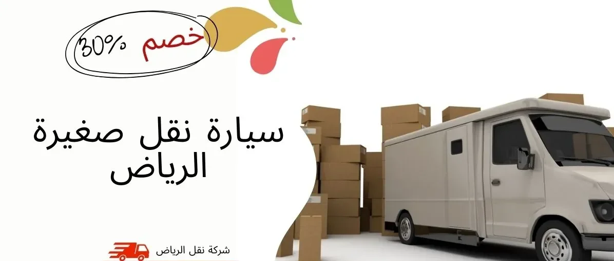

سيارة نقل صغيرة الرياض 0559865517

في مدينة الرياض المزدحمة حيث التنقل اليومي يتطلب حلولاً عملية وفعالة، تأتي سيارة نقل صغيرة الرياض كأحد الخيارات التي تلبي احتياجات الأفراد والعائلات بشكل مريح وميسر، وسواء كنت تحتاج لنقل أثاث أغراض صغيرة أو تجهيزات خفيفة، فإن هذا النوع من السيارات يضمن عملية نقل سريعة وآمنة، ومع خدمات شركة نقل الرياض التي تجمع بين الجودة والاحترافية أصبح التنقل داخل المدينة أكثر سهولة وراحة، مما يلبي احتياجات العملاء المتنوعة بشكل مثالي.
سيارة نقل عفش صغيرة حراج
تعتبر سيارة نقل صغيرة الرياض من الحلول المثالية التي تلبي احتياجات الأفراد والعائلات عند الانتقال أو نقل الأغراض، ومع تزايد عدد السكان في الرياض تزداد الحاجة إلى خدمات النقل الفعالة والموثوقة، وتوفر شركات النقل مجموعة واسعة من الخيارات التي تناسب مختلف الاحتياجات وخاصة عند البحث عن سيارات نقل العفش الصغيرة التي تسهل عملية النقل داخل المدينة، وإليك بعض المزايا التي تجعل هذا الخيار جذابًا للعديد من المستخدمين:
سهولة الوصول
يتمتع حراج سيارات النقل الصغيرة بتنوع كبير في الخيارات مما يسهل على العملاء العثور على السيارة المناسبة لاحتياجاتهم، ويمكن للعملاء زيارة الحراج شخصيًا أو البحث عبر الإنترنت عن الخيارات المتاحة مما يوفر الوقت والجهد.
أسعار تنافسية
تقدم الشركات أسعارًا تنافسية مما يجعلها خيارًا اقتصاديًا مناسبًا للمستخدمين، ويمكن للعملاء مقارنة الأسعار بين الشركات المختلفة للحصول على أفضل عرض يناسب ميزانيتهم.
خدمات إضافية
العديد من الشركات تقدم خدمات إضافية مثل التعبئة والتغليف ليضمن حماية الأغراض أثناء النقل، حيث تتضمن هذه الخدمات استخدام مواد تغليف عالية الجودة مثل الصناديق القوية والأغطية الواقية.
كفاءة النقل
تتميز السيارات الصغيرة بقدرتها على التنقل بسهولة في الشوارع الضيقة ليسهل عملية نقل عفش بالرياض، ويمكنها الوصول إلى المناطق التي قد تكون صعبة الوصول للسيارات الكبيرة مما يوفر الوقت والجهد.
تنوع الأحجام
تختلف أحجام سيارات النقل الصغيرة مما يسمح للعملاء باختيار الحجم المناسب وفقًا لاحتياجاتهم، كما توفر الشركات خيارات متعددة تتناسب مع كميات الأغراض المراد نقلها مما يضمن عدم وجود مساحة فارغة أو ازدحام.
سيارة نقل عفش الرياض
تعتبر سيارة نقل صغيرة الرياض خيارًا مثاليًا لمن يرغب في نقل الأثاث والأغراض بشكل آمن وسريع، ومع زيادة الطلب على خدمات النقل تعمل الشركات على تقديم أفضل الحلول التي تلبي احتياجات العملاء، وتوفر هذه السيارات مزايا متعددة تجعلها الخيار الأول للكثيرين في المدينة، حيث تسهم في جعل تجربة النقل أكثر سلاسة وراحة، وإليك بعض النقاط التي تبرز أهمية هذه الخدمة:
أمان الأغراض
سيارات النقل مصممة لحماية الأثاث والأغراض من الأضرار أثناء الرحلة، وتتمتع هذه السيارات بوسائل أمان متطورة مثل أحزمة التثبيت والأغطية الواقية مما يقلل من خطر التلف.
توفير الوقت
عمليات النقل تتم بشكل سريع وفعال مما يساعد العملاء على استغلال وقتهم في أمور أخرى، ويمكن للمستخدمين تحديد مواعيد النقل وفقًا لجدولهم الزمني مما يوفر لهم المرونة.
خدمة العملاء
تقدم شركات النقل خدمات ممتازة حيث يتواجد فريق عمل مدرب على تقديم الدعم والمساعدة للعملاء طوال العملية، ويمكن للعملاء الحصول على استشارات مجانية حول أفضل طرق النقل وإدارة الأغراض.
تأمين الأثاث
توفر العديد من الشركات خيارات تأمين على الأثاث المنقول مما يعزز من شعور الأمان لدى العملاء، ويمكن للعملاء اختيار التأمين المناسب وفقًا لقيمة الأغراض المنقولة.
مرونة الحجز
يمكن للعملاء حجز خدمات النقل بسهولة عبر الإنترنت أو الهاتف مما يوفر الوقت والجهد، وتقدم بعض الشركات تطبيقات مخصصة تسهل عملية الحجز وإدارة المواعيد.
نقل أغراض بالرياض
في مدينة الرياض تعتبر فكرة نقل أغراض بالرياض عملية متكاملة تتطلب تخطيطًا جيدًا واختيار الشركة المناسبة، وتقدم العديد من الشركات خدمات متخصصة مثل سيارة نقل صغيرة الرياض لتلبية احتياجات النقل المختلفة مما يسهل على الأفراد والعائلات نقل أغراضهم بكل سهولة، وإليك بعض المزايا التي تجعل هذه الخدمة ضرورية:
- تنوع الخدمات: تشمل خدمات النقل جميع أنواع الأغراض من الأثاث إلى الأجهزة الكهربائية، ويمكن للعملاء الاستفادة من خدمات نقل الأغراض الشخصية بما في ذلك الملابس والمقتنيات الثمينة.
- فريق متخصص: تمتلك الشركات فرق عمل مدربة تتفهم كيفية التعامل مع مختلف أنواع الأغراض، ويتم تدريب هؤلاء الفرق على كيفية حمل الأثاث الثقيل وتفكيكه وإعادة تركيبه بشكل آمن.
- استراتيجيات التعبئة: يتمتع الفريق بخبرة في تقنيات التعبئة الصحيحة لضمان سلامة الأغراض، ويستخدم العمال مواد تعبئة مخصصة لحماية الأثاث من الخدوش والضرر أثناء النقل.
- تخصيص الخدمة: يمكن للعملاء تخصيص الخدمة وفقًا لاحتياجاتهم الخاصة مما يعزز من تجربة النقل، كما يمكنهم تحديد مواعيد النقل وأوقات الاستلام والتسليم بما يتناسب مع جداولهم.
- إعادة التدوير: بعض الشركات تقدم خدمات إعادة التدوير للأغراض القديمة مما يساهم في المحافظة على البيئة، ويمكن للعملاء تسليم الأغراض غير المرغوب فيها لإعادة تدويرها بدلاً من التخلص منها.
سيارة نقل صغيرة الرياض
عندما يتعلق الأمر بـ سيارة نقل صغيرة الرياض فإنها تمثل الخيار الأمثل للأفراد الذين يحتاجون إلى نقل كميات صغيرة من الأغراض، وتعتبر هذه الخدمة مثالية للانتقالات السريعة أو نقل الأغراض بين المواقع المختلفة داخل المدينة، وإليك بعض المزايا التي تجعل هذا الخيار مثاليًا:
سهولة الاستخدام
السيارات الصغيرة سهلة القيادة وتناسب جميع أنواع السائقين، ويمكن حتى للسائقين غير المحترفين التعامل معها بسهولة مما يقلل من حدة القلق أثناء القيادة.
توفير المساحة
تصميم السيارة يساعد في توفير المساحة أثناء النقل مما يجعلها مثالية للأماكن الضيقة، ويمكن استخدامها في الشوارع الضيقة والأزقة ليسهل الوصول إلى المواقع المختلفة.
التكلفة المنخفضة
تعتبر تكلفة استئجار سيارة نقل صغيرة أقل بكثير مقارنة بالسيارات الكبيرة، وهذا يجعلها خيارًا جذابًا للطلاب أو العائلات ذات الميزانية المحدودة.
تنظيم النقل
يمكن للعملاء تنظيم أوقات النقل بشكل مرن مما يساعد في تخفيف الضغط أثناء الحركة، ويمكن تحديد مواعيد استلام وتسليم تناسب احتياجاتهم.
خدمات مضافة
تقدم بعض الشركات خدمات إضافية مثل التخزين المؤقت للأغراض مما يوفر مزيدًا من الراحة للعملاء، ويمكن للعملاء استئجار مساحة تخزين لأغراضهم حتى يتمكنوا من تنظيم نقلهم بشكل أفضل.
نقل عفش بالرياض
تعتبر عملية نقل عفش بالرياض من العمليات المهمة التي تتطلب التخطيط والتنفيذ الدقيق، وتحتاج هذه العملية إلى خبرة وكفاءة لضمان النقل السلس والآمن للأثاث، وتقدم الشركات المتخصصة مجموعة متنوعة من الخدمات مثل سيارة نقل صغيرة الرياض التي تلبي احتياجات جميع العملاء، وإليك بعض النقاط المهمة حول هذه الخدمة:
-
- خبرة الفريق: تمتلك الشركات فرق عمل مدربة ومؤهلة للتعامل مع الأثاث بكافة أنواعه، ويتم تدريبهم على أفضل الممارسات في الرفع والنقل مما يضمن سلامة الأثاث.
- مراعاة التفاصيل: يتم التعامل مع كل قطعة أثاث بعناية لضمان عدم تعرضها لأي ضرر، كما يتم استخدام مواد تعبئة عالية الجودة لحماية الأثاث خلال النقل.
- تقييم احتياجات العملاء: تتفهم الشركات احتياجات العملاء وتقدم الحلول المناسبة لكل حالة، ويقوم فريق العمل بإجراء تقييم شامل لتحديد الطريقة المثلى للنقل.
- تقديم المشورة: توفر الشركات نصائح حول كيفية إعداد الأثاث للنقل، مما يسهل العملية، وقد تشمل النصائح كيفية تفكيك الأثاث الكبير وتغليفه بشكل صحيح.
- خدمات ما بعد النقل: بعد الوصول تقدم بعض الشركات خدمات تركيب الأثاث مما يوفر مزيدًا من الراحة للعملاء، ويمكن للعمال المساعدة في تنظيم الأغراض داخل المساحات الجديدة.
شركة نقل الرياض
تعتبر شركة نقل الرياض من الشركات الرائدة في مجال خدمات النقل بالمملكة العربية السعودية، وتلتزم الشركة بتقديم أفضل الخدمات وأهمها سيارة نقل صغيرة الرياض لتلبية احتياجات عملائها مما يجعلها الخيار الأول للكثيرين في الرياض، وإليك بعض الأسباب التي تميز هذه الشركة عن غيرها:
| التنوع في الخدمات | تقدم الشركة مجموعة متنوعة من خدمات النقل تشمل النقل السكني والتجاري، ويمكنها التعامل مع كل شيء من الأثاث المنزلي إلى المعدات الثقيلة. |
| أسطول سيارات حديث | تمتلك الشركة أسطولًا من السيارات الحديثة التي تناسب جميع أنواع الأغراض، كما يتم صيانة هذه السيارات بشكل دوري لضمان أفضل أداء. |
| التقنيات الحديثة | تستخدم الشركة تقنيات حديثة في تتبع الشحنات مما يوفر للعملاء راحة البال، ويمكن للعملاء متابعة شحناتهم في الوقت الفعلي. |
| خدمة العملاء | فريق خدمة العملاء متاح على مدار الساعة للإجابة على الاستفسارات وتقديم الدعم، ليتمكن العملاء من التواصل عبر الهاتف أو الدردشة المباشرة لتلقي المساعدة. |
| التقييمات الإيجابية | تتمتع الشركة بسمعة ممتازة بين العملاء مما يعكس جودة خدماتها واحترافيتها، وحصلت على تقييمات عالية من قبل العملاء السابقين مما يعزز من ثقة العملاء الجدد في خدماتها. |
الأسئلة الشائعة حول سيارة نقل صغيرة الرياض
هل يمكن استئجار السيارة لفترة قصيرة؟
بالتأكيد توفر الشركة خيارات استئجار مرنة تشمل الاستئجار بالساعة لتلبية الاحتياجات العاجلة.
ما المناطق التي تغطيها الشركة داخل الرياض؟
تغطي خدمات الشركة جميع أحياء ومناطق الرياض بما في ذلك الأماكن البعيدة أو الضيقة.
هل تتوفر خدمة الحجز عبر الإنترنت؟
نعم تسهل الشركة عملية الحجز من خلال موقعها الإلكتروني أو عبر تطبيق خاص يوفر تجربة مريحة للعملاء.
هل تقدم الشركة ضمانًا على سلامة الأغراض أثناء النقل؟
نعم توفر شركة نقل الرياض ضمانًا وخيارات تأمين لحماية الأغراض من أي تلف خلال عملية النقل.